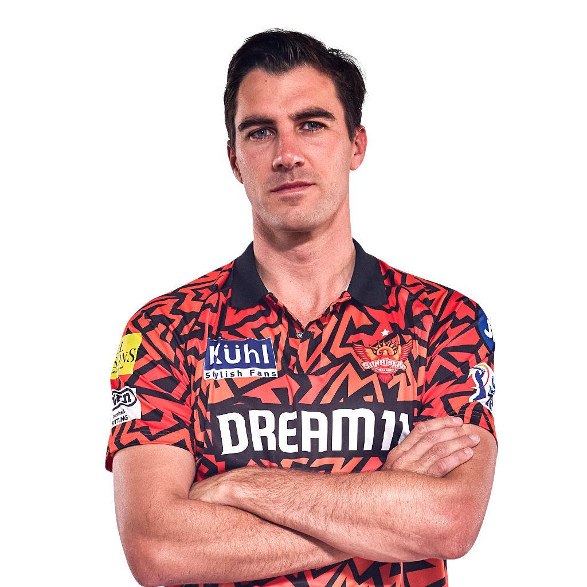
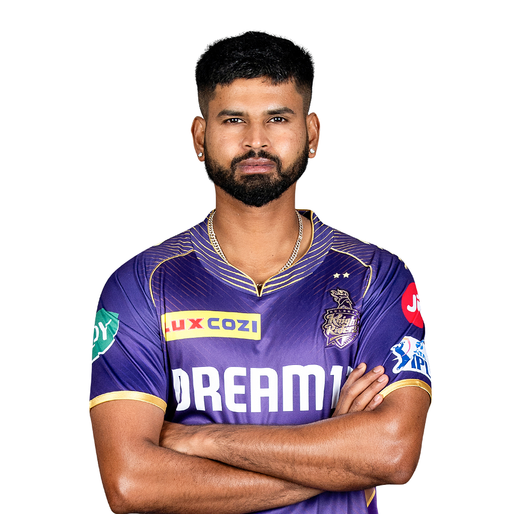
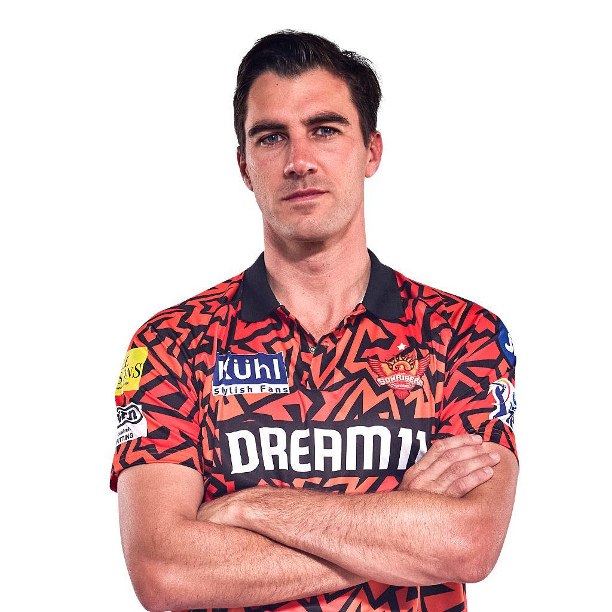
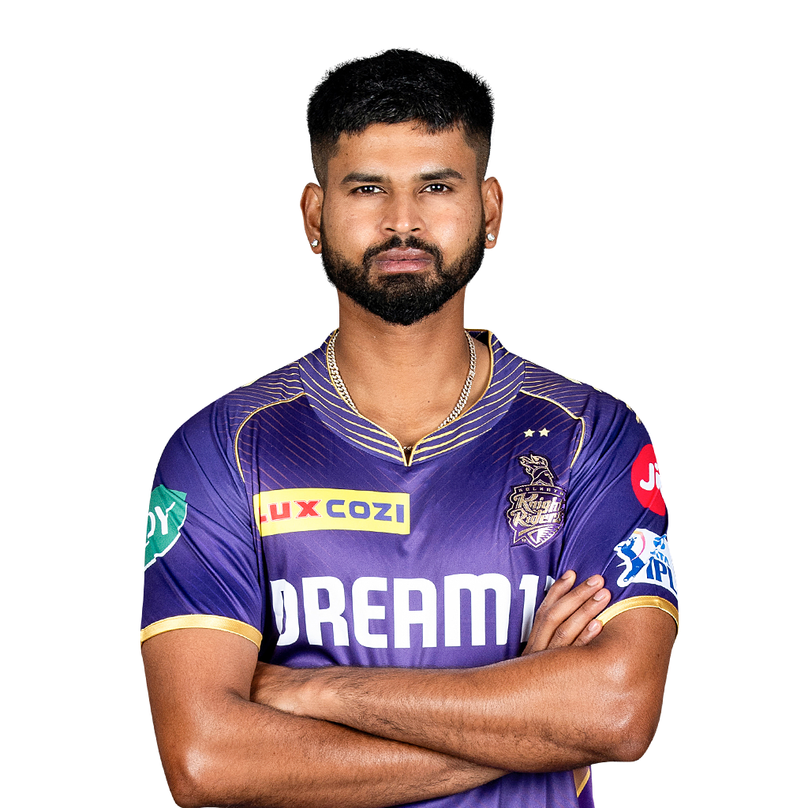
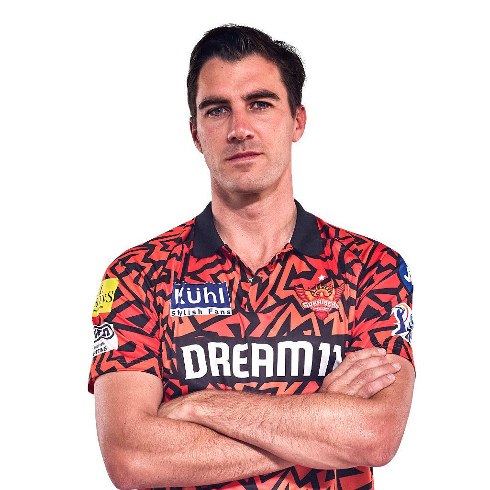
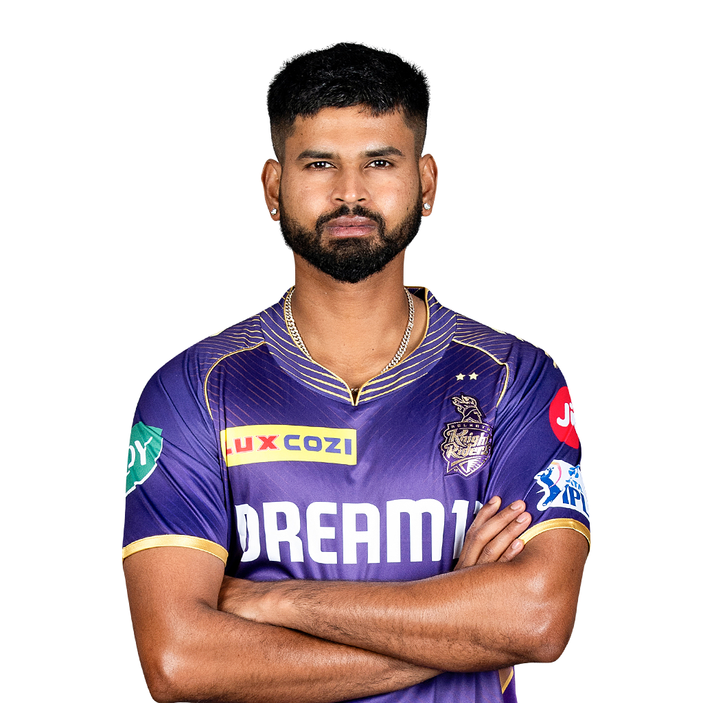

The 2024 Indian Premier League (also known as IPL 17 and branded as TATA IPL 2024) was the 17th edition of the Indian Premier League, a franchise Twenty20 cricket league in India, organized by the Board of Control for Cricket in India. The tournament featured ten teams competing in 74 matches from 22 March to 26 May 2024. It was held across 13 cities in India, with Chennai hosting the opening ceremony and the final. Chennai Super Kings were the defending champions, having won their fifth title during the previous season after beating Gujarat Titans. In the final,Kolkata Knight Riders defeated Sunrisers Hyderabad by 8 wickets to win their third IPL title.
The format returned to the same as 2022, unlike 2023, with changes in group order. Each team will be playing twice against the teams in their group, against the team in the same row in the other group, and once against the remaining four teams in the other group.After the group stage, the top four teams based on aggregate points qualified for the playoffs. In this stage, the top two teams compete with each other (in a match titled "Qualifier 1"), as do the remaining two teams (in a match titled "Eliminator"). While the winner of Qualifier 1 directly qualified for the final match, the losing team has another chance to qualify for the final match by competing against the winning team of the Eliminator match (in a match titled "Qualifier 2"). The winner of this subsequent Qualifier 2 match will move on to the final match. The team that wins the final match will be crowned the Indian Premier League winners.
The same 10 teams from the previous season returned with few changes to the team personnel.
| Group | Team | Last year performance | Captain |
|---|---|---|---|
| A | Delhi Capitals | 9th | Rishabh Pant |
| B | Chennai Super Kings | Champions | Ruturaj Gaikwad |
| B | Royal Challengers Bengalore | 6th | Faf du Plessis |
In cricket, a captain is a player who leads the team and has additional roles and responsibilities.The Indian Premier League (IPL) is a professional league for Twenty20 cricket in India,which has been held annually since its first edition in 2008.In the 17 seasons played, 70 players have captained their team in at least one match.


Mumbai Indians' Rohit Sharma has won 6 titles as a player and 5 as a captain making him the joint most successful player (along with Ambati Rayudu) and joint most successful captain in IPL history along with Chennai Super Kings's MS Dhoni.With the highest win-loss percentage among successful captains who have captained over 44 matches, MS Dhoni is the captain and player who has played most number of finals and qualified for most times in the playoffs. He has played 226 matches and won the most number of matches as a captain with 133, and has also lost the most matches playing as a captain with 91,where as Rohit Sharma has a second place with 5 titles. Mahela Jayawardene, Kumar Sangakkara, and Steven Smith are the only players to captain three teams: Jayawardene has captained Delhi Daredevils, Kings XI Punjab and Kochi Tuskers Kerala, Sangakkara has captained Kings XI Punjab, Deccan Chargers and Sunrisers Hyderabad, and Smith has captained Pune Warriors India, Rajasthan Royals, Rising Pune Supergiants. James Hopes of the Daredevils has captained the most matches without registering a win; he led his team in three matches, two of which were lost and one ended with no result.
Only two trophy winning captains Iyer and pandya are there who is still captaining a side. At present, Shreyas Iyer is the only player who is captaining a team and having a trophy with the same side (Kolkata Knight Riders). Shreyas Iyer is the only captain in the IPL history who took two different sides in the final of the different editions of the IPL. At first he took Delhi Capitals in the final of IPL 2020 where the team lost to Mumbai Indians and In second time he took Kolkata Knight Riders in the final of IPL 2024 where the team won the trophy in the one sided chase against Sunrisers Hyderabad.
In January 2024, the BCCI invited bids for staging the opening ceremony.The following month, Kasi Viswanathan, the CEO of the Chennai Super Kings told that the opening ceremony would be held in Chennai by virtue of the venue being the home of the defending champions.The opening ceremony took place on 22 March at the M. A. Chidambaram Stadium in Chennai. Actors Tiger Shroff and Akshay Kumar promoted and performed for a song sequence from their film Bade Miyan Chote Miyan. Singer Sonu Nigam delivered a rendition of "Vande Mataram", while A. R. Rahman and Mohit Chauhan joined for "Maa Tujhe Salaam", while the former went solo for "Jai Ho".Chauhan also sang his hit song "Masakali". Singer Neeti Mohan also performed at the event.